Karten im Detail
Alle 19 Karten mit Vorder- und Rückseite sowie didaktischen Hinweisen für den Unterricht - in DIN-A7-Grösse (etwas grösser als handelsübliche Spielkarten).
01
Datenschutz - Nicht alles gehört ins Internet
Kategorie: Sicher im Netz
Datenschutz - Nicht alles gehört ins Internet
Kategorie: Sicher im Netz
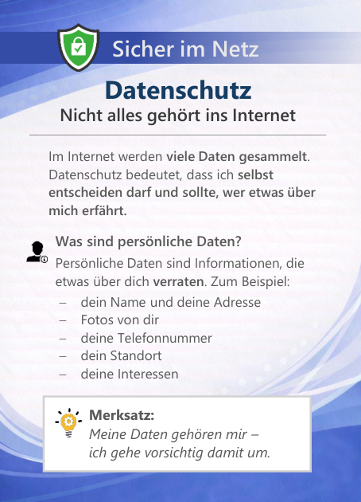
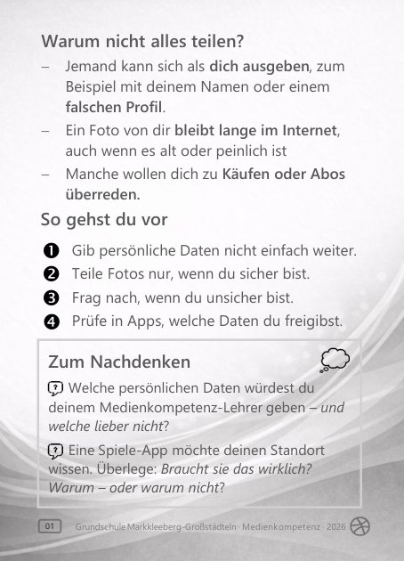
Lernziel: Die Kinder verstehen, was persönliche Daten sind und warum sie geschützt werden müssen. Sie wissen, dass sie nicht alles im Internet teilen sollten und dass sie ein Recht auf Schutz ihrer Daten haben. Sie erkennen mögliche Folgen unbedachten Teilens (z. B. Missbrauch von Fotos oder Profilen).
Live zeigen:
- Ein fiktives Profil anschauen und überlegen: Welche Informationen sind sensibel?
- Online-Anmeldeformular besprechen: Welche Daten sind nötig?
- Zugriffe einer App prüfen (z. B. Standort).
02
Gefahren im Internet - Diese Tricks gibt es
Kategorie: Sicher im Netz
Gefahren im Internet - Diese Tricks gibt es
Kategorie: Sicher im Netz
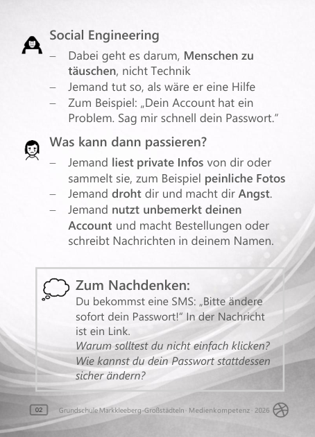
Lernziel: Die Kinder kennen typische Internet-Tricks (Phishing, Malware, Social Engineering). Sie verstehen: Dahinter stecken Menschen mit klaren Zielen - zum Beispiel Passwörter, Geld oder private Daten.
Live zeigen:
- Beispiel-Phishing-E-Mails aus dem Netz anschauen.
- Eine typische Ransomware-Meldung als Beispiel betrachten und besprechen.
03
Account - Wie schütze ich ihn vor Hackern
Kategorie: Sicher im Netz
Account - Wie schütze ich ihn vor Hackern
Kategorie: Sicher im Netz
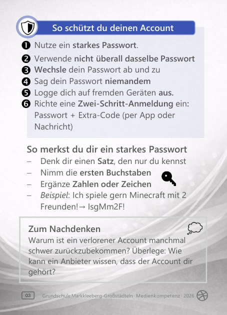
Lernziel: Die Kinder verstehen, was ein Account ist und warum er geschützt werden muss. Sie wissen, wie Hacker an Accounts gelangen können und kennen wichtige Schutzmassnahmen (starkes Passwort, keine Weitergabe, Zwei-Schritt-Anmeldung).
Live zeigen:
- Gemeinsam ein starkes Passwort nach der "Satz-Methode" entwickeln.
- Beispiele für schwache und starke Passwörter vergleichen.
- Eine Zwei-Schritt-Anmeldung (z. B. per Demo-Account) zeigen und erklären.
04
Cybermobbing I - Erkennen und verstehen
Kategorie: Sicher im Netz
Cybermobbing I - Erkennen und verstehen
Kategorie: Sicher im Netz
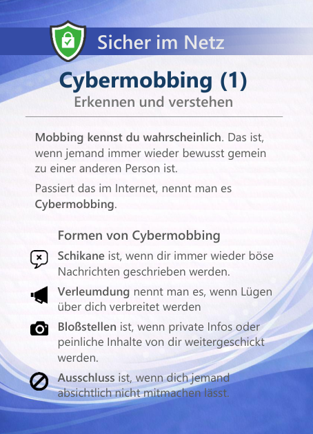
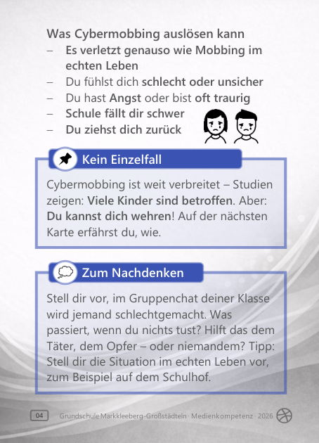
Lernziel: Die Kinder verstehen, was Cybermobbing ist und wie es sich äußern kann (z. B. Schikane, Verleumdung, Blossstellen, Ausschluss). Sie erkennen, dass Cybermobbing echte Folgen für Gefühle, Selbstvertrauen und Schule haben kann.
Live zeigen:
- Kurze, selbst erstellte und altersgerechte Fallbeispiele oder Chatverläufe vorstellen und gemeinsam einordnen.
- Besprechen: Wie fühlt sich die betroffene Person?
- Gemeinsam überlegen: Warum verhält sich der Täter oder die Täterin so?
05
Cybermobbing II - So schützt du dich und andere
Kategorie: Sicher im Netz
Cybermobbing II - So schützt du dich und andere
Kategorie: Sicher im Netz
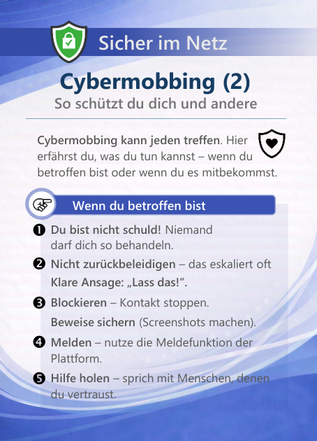
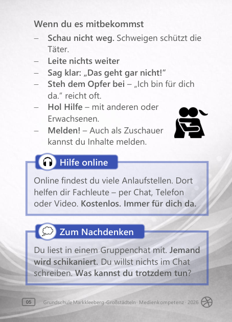
Lernziel: Die Kinder wissen, wie sie bei Cybermobbing reagieren können - als betroffene Person und als Zuschaürin oder Zuschaür. Sie verstehen: Niemand ist schuld, wenn er oder sie gemobbt wird. Hilfe holen ist richtig und wichtig.
Live zeigen:
- Gemeinsam üben, klare und respektvolle Stoppsätze zu formulieren ("Lass das.", "Das ist nicht okay.").
- Das Sichern von Beweisen erklären (z. B. wie ein Screenshot gemacht wird).
- Vertrauenspersonen sammeln: An wen kann ich mich wenden? (Schule, Familie, Beratungsstellen).
- Eine kindgerechte Online-Beratungsstelle vorstellen.
06
Cybergrooming - Wenn dich Fremde online ansprechen
Kategorie: Sicher im Netz
Cybergrooming - Wenn dich Fremde online ansprechen
Kategorie: Sicher im Netz
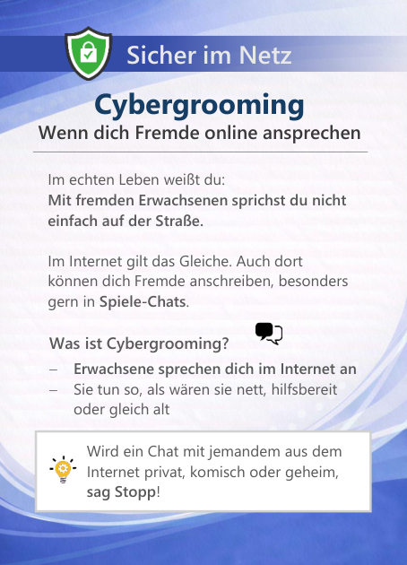
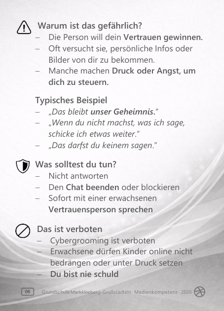
Lernziel: Die Kinder verstehen, was Cybergrooming ist und wie Täter im Internet vorgehen (z. B. Vertrauen aufbauen, Druck ausüben, Geheimnisse fordern).
Live zeigen:
- Einen altersgerecht formulierten Beispiel-Chat gemeinsam lesen und besprechen.
- Besprechen, warum Täter Vertrauen aufbauen und warum sie Druck machen.
- Gemeinsam überlegen: Wer kommt als Vertrauensperson in Frage?
- Eine geeignete Beratungsstelle für Kinder vorstellen.
07
Das Internet - Wie geht es und was geht
Kategorie: Wissen aus dem Netz
Das Internet - Wie geht es und was geht
Kategorie: Wissen aus dem Netz
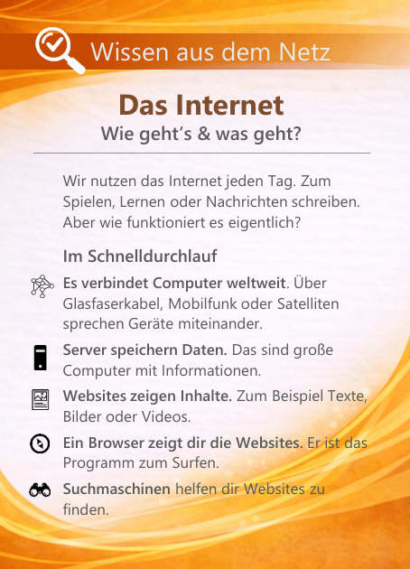
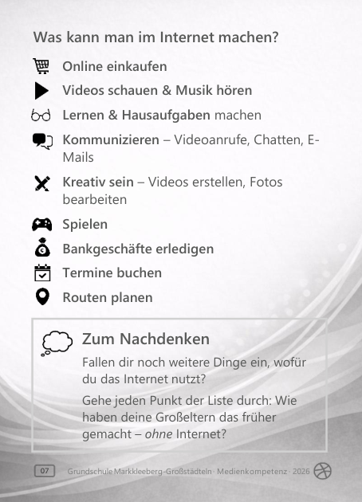
Lernziel: Die Kinder verstehen in Grundzügen, wie das Internet funktioniert (Verbindung von Geräten, Server, Websites, Browser, Suchmaschinen). Sie erkennen, wie vielfältig das Internet im Alltag genutzt wird.
Live zeigen:
- Den Weg zu einer Website Schritt für Schritt zeigen: Browser öffnen -> Suchmaschine nutzen -> Website anklicken.
- Einige Websites oder Apps beispielhaft zeigen (z. B. Lern-App, Online-Lexikon, Messenger).
08
Informationen im Internet - Was stimmt wirklich
Kategorie: Wissen aus dem Netz
Informationen im Internet - Was stimmt wirklich
Kategorie: Wissen aus dem Netz
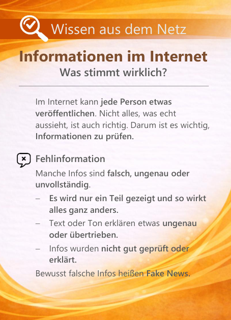
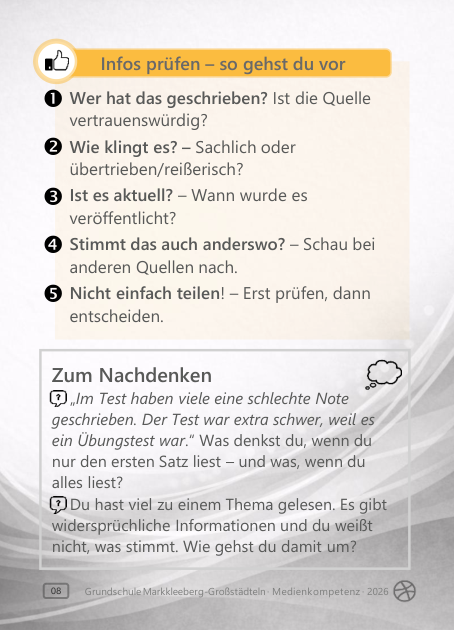
Lernziel: Die Kinder verstehen, dass im Internet nicht alle Informationen richtig sind. Sie kennen Merkmale von Fehlinformationen und wissen, wie man Inhalte grundlegend prüft.
Live zeigen:
- Eine Behauptung aufstellen und diese gemeinsam mit den Kindern im Internet überprüfen (Quelle suchen, vergleichen, weitere Informationen finden).
- Altersgerechte, reisserische oder unsachliche Texte vorstellen (ggf. selbst formuliert) und die Kinder selbst erkennen lassen, warum der Text hinterfragt werden sollte.
09
Werbung im Internet - Nervig oder notwendig
Kategorie: Wissen aus dem Netz
Werbung im Internet - Nervig oder notwendig
Kategorie: Wissen aus dem Netz
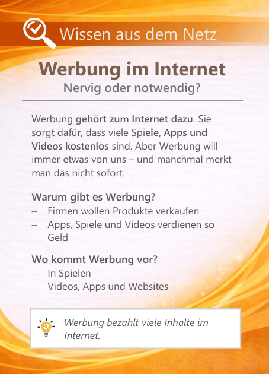
Lernziel: Die Kinder verstehen, warum es Werbung im Internet gibt und dass sie oft dazu dient, Geld zu verdienen. Sie erkennen verschiedene Formen von Werbung (offene und versteckte Werbung, Inflüncer, Affiliate-Links).
Live zeigen:
- Eine Website oder App gemeinsam Öffnen und Werbeformen suchen (Banner, gesponserte Treffer, Produktplatzierungen).
- Eine Suchmaschine zeigen und bezahlte Treffer von normalen Treffern unterscheiden.
- Affiliate-Links anhand eines Inflüncers beispielhaft zeigen und erklären, wie damit Geld verdient wird.
10
Künstliche Intelligenz I - Was ist das
Kategorie: Wissen aus dem Netz
Künstliche Intelligenz I - Was ist das
Kategorie: Wissen aus dem Netz
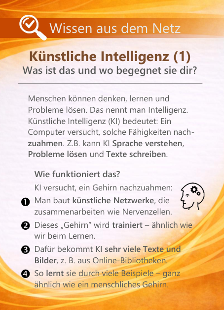
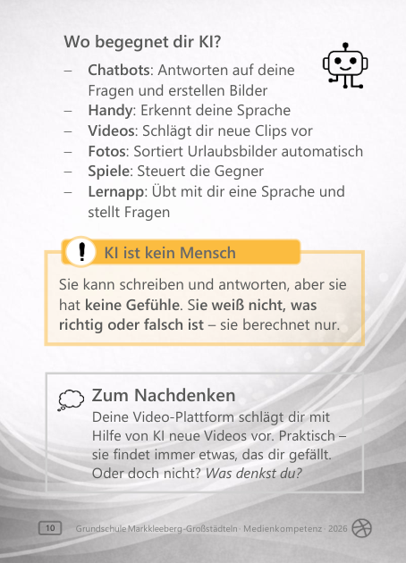
Lernziel: Die Kinder verstehen grundlegend, was Künstliche Intelligenz (KI) ist. Sie wissen, wie KI grob funktioniert und wo ihnen KI im Alltag begegnet. Sie erkennen: KI hat keine Gefühle und kein eigenes Bewusstsein.
Live zeigen:
- Eine KI-Anwendung live zeigen (z. B. einen Chatbot etwas fragen oder ein Bild erstellen lassen).
11
Künstliche Intelligenz II - Herausforderungen und Risiken
Kategorie: Wissen aus dem Netz
Künstliche Intelligenz II - Herausforderungen und Risiken
Kategorie: Wissen aus dem Netz
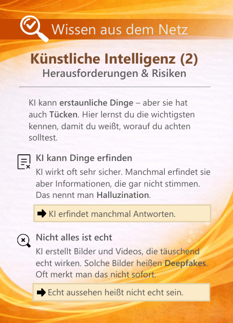
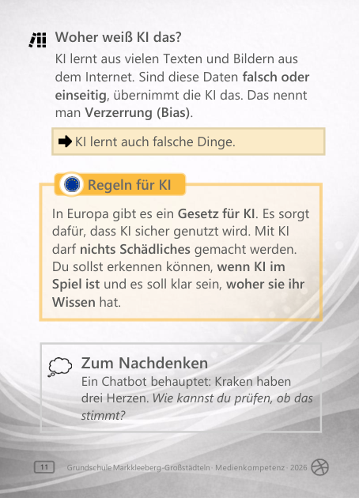
Lernziel: Die Kinder verstehen, dass Künstliche Intelligenz nicht immer richtig liegt. Sie kennen typische Risiken wie erfundene Inhalte (Halluzinationen), täuschend echte KI-Bilder oder Videos (Deepfakes) und Verzerrungen durch fehlerhafte oder einseitige Trainingsdaten (Bias). Sie erkennen: KI wirkt oft sicher, kann sich aber irren oder falsche Inhalte erzeugen.
Live zeigen:
- Ein altersgerechtes Deepfake-Beispiel zeigen und überlegen: Woran könnte man erkennen, dass es nicht echt ist?
- Einige Fallbeispiele aus dem Netz zeigen, bei denen sich KI geirrt hat, und gemeinsam besprechen, warum das passieren kann.
12
Fotos von Menschen - Was darf ich online teilen
Kategorie: Regeln im Netz
Fotos von Menschen - Was darf ich online teilen
Kategorie: Regeln im Netz
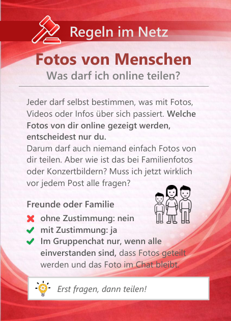
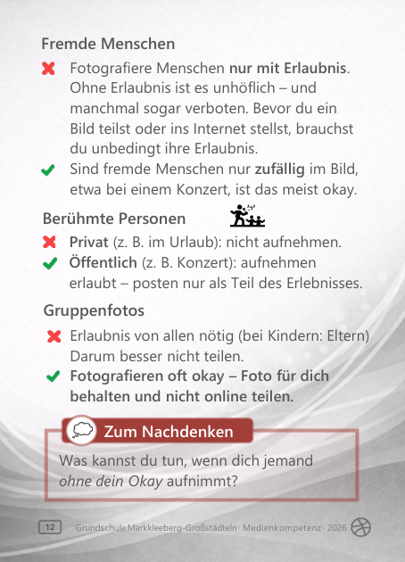
Lernziel: Die Kinder verstehen, dass jede Person selbst über Fotos und persönliche Inhalte bestimmen darf. Sie wissen, dass Fotos nur mit Erlaubnis geteilt werden dürfen. Sie unterscheiden zwischen privaten, fremden und Öffentlichen Situationen.
Live zeigen:
- Beispielbilder zeigen (Familienfoto, Gruppenfoto, Konzertbild) und gemeinsam besprechen: Darf ich das posten - ja oder nein?
13
Fotos von mir selbst - Was darf ich online zeigen
Kategorie: Regeln im Netz
Fotos von mir selbst - Was darf ich online zeigen
Kategorie: Regeln im Netz
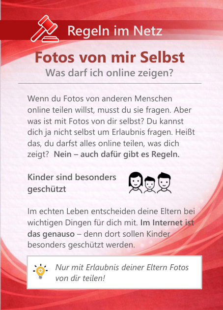
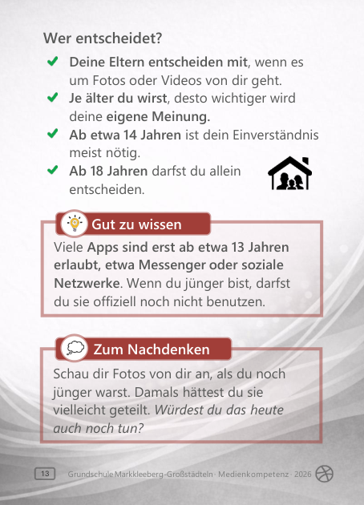
Lernziel: Die Kinder verstehen, dass auch Fotos von ihnen selbst nicht einfach beliebig online geteilt werden dürfen. Sie wissen, dass Kinder im Internet besonders geschützt sind und dass Eltern dabei mitentscheiden. Sie kennen die altersabhängige Rolle von Zustimmung (Eltern und eigene Einwilligung).
Live zeigen:
- Eine Einverständniserklärung für ein Klassenfoto zeigen und besprechen.
14
Urheberrecht - Schutz für kreative Werke
Kategorie: Regeln im Netz
Urheberrecht - Schutz für kreative Werke
Kategorie: Regeln im Netz
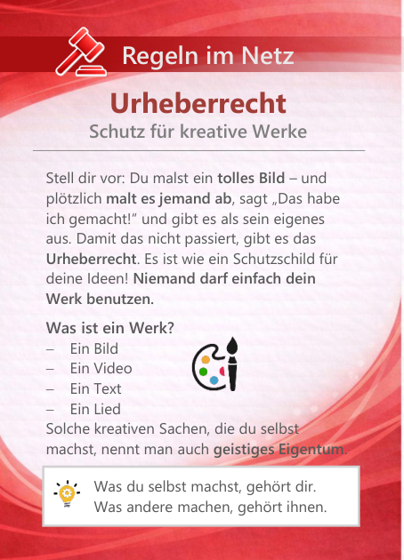
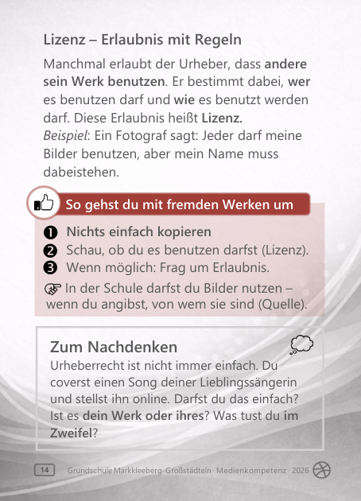
Lernziel: Die Kinder verstehen, was Urheberrecht ist und dass kreative Werke geschützt sind. Sie wissen, dass Bilder, Texte, Videos oder Musik nicht einfach kopiert oder als eigene ausgegeben werden dürfen.
Live zeigen:
- Zwei Beispiele vergleichen: frei nutzbares Bild mit Lizenz vs. geschütztes Bild ohne Erlaubnis.
- Gemeinsam üben, eine Quelle richtig anzugeben (z. B. Bild + Name des Urhebers).
15
FOMO - Die Angst etwas zu verpassen
Kategorie: Mein Leben im Netz
FOMO - Die Angst etwas zu verpassen
Kategorie: Mein Leben im Netz
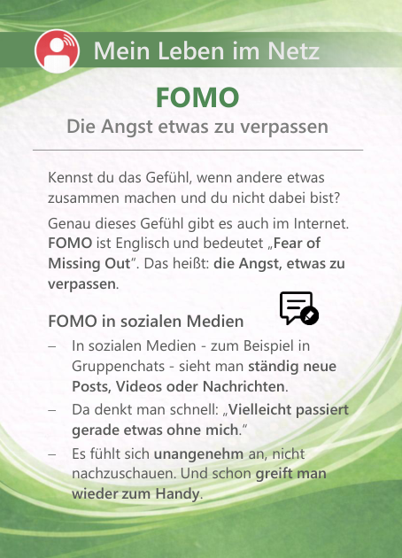
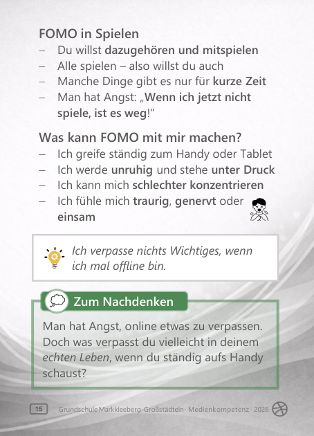
Lernziel: Die Kinder verstehen, was FOMO ("Fear of Missing Out") bedeutet - die Angst, etwas zu verpassen. Sie erkennen typische Situationen in sozialen Medien und Spielen, in denen FOMO entsteht. Sie wissen, welche Gefühle und Verhaltensweisen dadurch ausgelöst werden können.
16
Soziale Medien - Warum Vergleiche dir schaden
Kategorie: Mein Leben im Netz
Soziale Medien - Warum Vergleiche dir schaden
Kategorie: Mein Leben im Netz
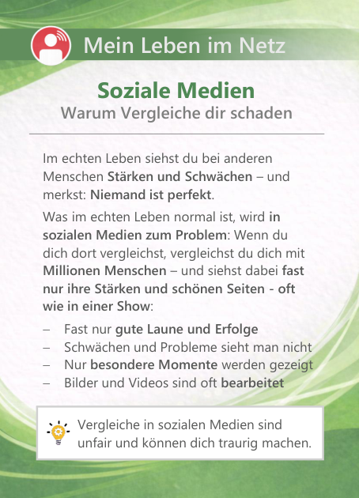
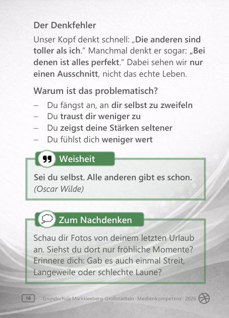
Lernziel: Die Kinder erkennen, dass Vergleiche in sozialen Medien häufig auf einseitigen und bearbeiteten Darstellungen beruhen. Sie verstehen, dass solche Vergleiche das eigene Selbstwertgefühl beeinträchtigen können.
Live zeigen:
- Zwei Bilder vergleichen: ein bearbeitetes "perfektes" Bild und ein normales Alltagsbild - Was fällt auf?
- Ein Social-Media-Profil zeigen (z. B. eine Familie auf Weltreise / Work-and-Travel) und gemeinsam analysieren: Was wird gezeigt? Was könnte im Alltag schwierig sein, wird aber nicht gezeigt?
17
In-Game Käufe - Wie kleine Beträge groß werden
Kategorie: Mein Leben im Netz
In-Game Käufe - Wie kleine Beträge groß werden
Kategorie: Mein Leben im Netz
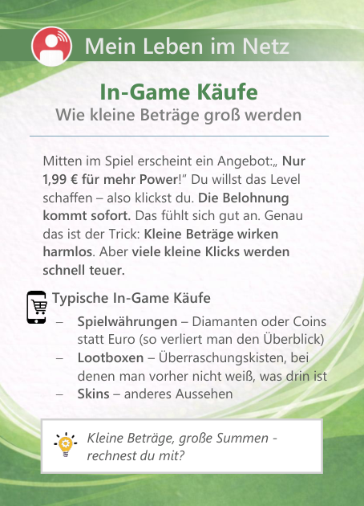
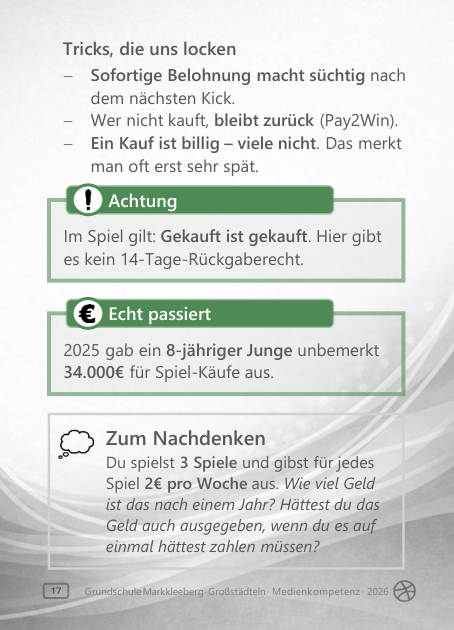
Lernziel: Die Kinder verstehen, wie In-Game-Käufe funktionieren und warum kleine Beträge schnell zu hohen Ausgaben werden können. Sie erkennen typische Kaufarten (Spielwährungen, Lootboxen, Skins) und verstehen psychologische Tricks wie sofortige Belohnung oder Zeitdruck.
Live zeigen:
- Ein Spiel (oder Screenshots) zeigen, in dem In-Game-Käufe angeboten werden.
18
Medienzeit I - Warum es schwer ist aufzuhören
Kategorie: Mein Leben im Netz
Medienzeit I - Warum es schwer ist aufzuhören
Kategorie: Mein Leben im Netz
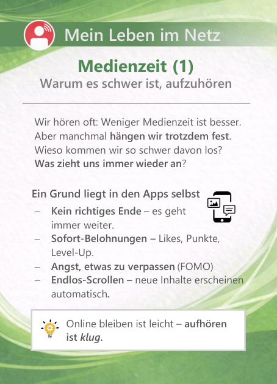
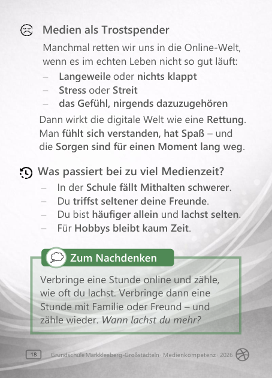
Lernziel: Die Kinder verstehen, warum es schwer sein kann, Mediennutzung zu beenden. Sie erkennen Mechanismen wie Endlos-Scrollen, Sofort-Belohnungen und FOMO sowie die Rolle von Medien als "Trostspender". Sie wissen, welche Folgen übermässige Medienzeit haben kann.
19
Medienzeit II - So bekommst du die Kontrolle
Kategorie: Mein Leben im Netz
Medienzeit II - So bekommst du die Kontrolle
Kategorie: Mein Leben im Netz
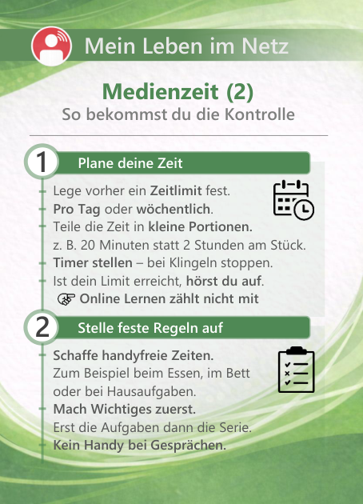
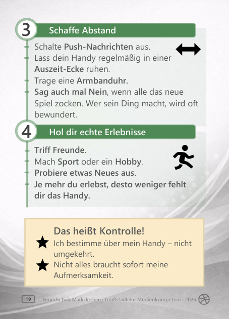
Lernziel: Die Kinder kennen konkrete Strategien, um ihre Medienzeit bewusst zu steürn. Sie verstehen, wie Planung, klare Regeln und Abstand zum Gerät helfen können. Sie erkennen, dass echte Erlebnisse und soziale Kontakte eine wichtige Balance schaffen.
Live zeigen:
- Push-Nachrichten am Beispiel erklären und zeigen, wie man sie ausschalten kann.
Interaktive Abstimmung mit Farbkarten
Ergänzend zu den Themenkarten arbeite ich im Unterricht mit drei einfachen Farbkarten:
- Rot - Nein
- Grün - Ja
- Weiß - Ich bin unsicher / neutral
Mit diesen Karten können die Schülerinnen und Schüler schnell und sichtbar auf Fragen reagieren. So bleibt der Unterricht lebendig, und alle werden aktiv einbezogen.
Typische Fragen sind zum Beispiel:
- Wer besitzt bereits ein eigenes Smartphone?
- Wer schreibt seinen Eltern per Messenger?
- Wer hat schon einmal einen In-App-Kauf gemacht?
- Wer war schon länger als drei Stunden am Stück am Handy?
Durch die Abstimmungen entsteht ein offener Austausch über Mediennutzung im Alltag. Gleichzeitig lernen die Kinder, ihr eigenes Verhalten zu reflektieren - ohne Druck, sondern auf spielerische und respektvolle Weise.